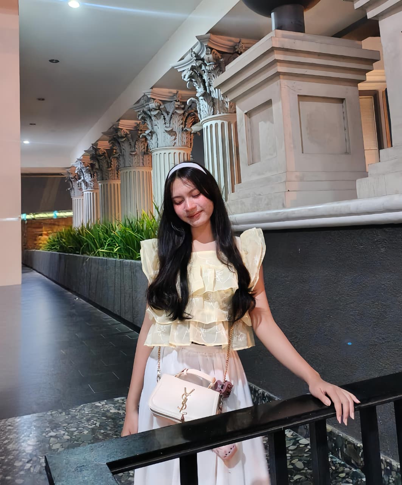

Avatar & Cute Things
Hal lucu dan menggemaskan yang bikin hariku makin berwarna.

♡ little things, big dreams ♡
🎓 Mahasiswa Sistem Informasi
Universitas Tanjungpura
♡ Suka musik, dance, memasak, dan hal-hal lucu
💻 Tertarik mempelajari teknologi dan pemrograman
Kenalan yuk! →✿ a little introduction ✿
but you can call me Cia ♡
Halo! Aku mahasiswa Sistem Informasi di Universitas Tanjungpura. Aku suka belajar hal baru, terutama tentang teknologi dan pemrograman.
Di sela-sela belajar, aku suka mendengarkan musik, dance, memasak, dan menemukan hal-hal kecil yang bikin hari terasa lebih menyenangkan. Semoga aku bisa terus bertumbuh dan meraih mimpi! 🌱
Lihat kesukaanku ♡♡ little things I adore ♡
Hal-hal kecil yang bikin Cia happy!
Hal lucu dan menggemaskan yang bikin hariku makin berwarna.
Teman setia buat menemani hari dan memperbaiki mood.
Warna favorit yang manis, lembut, dan bikin hati adem.
Suatu hari ingin jadi CEO yang hebat, mandiri, dan membawa manfaat.
✧ things that make me happy ✧
Tiga hal yang seru buat dilakukan di waktu luang.
Playlist favorit jadi teman untuk santai, semangat, dan memperbaiki mood. ♫
Gerak mengikuti musik, melepas penat, dan menikmati momen dengan happy!
Mencoba resep baru dan membuat makanan enak dengan sepenuh hati. ♡
♡ a reminder for my soul ♡
“Jesus is the anchor of my soul”
Tetap beriman, terus belajar, dan melangkah dengan penuh harapan. ✝ ♡
💌 a tiny message for you
♡ unexpected eye contact
♡ random encounters
♡ familiar faces in unexpected places
♡ someone who makes me curious